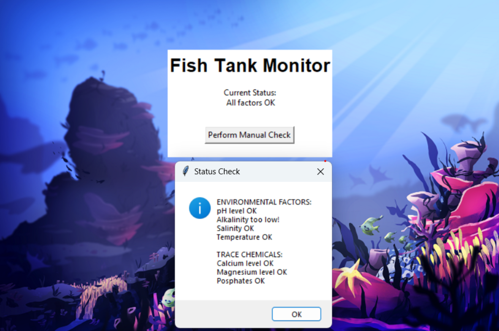
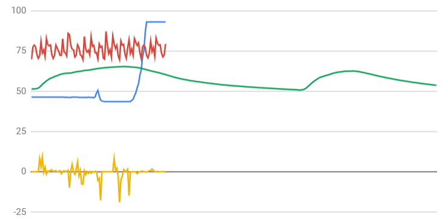

We made a game where you would be asked to select the type of crust along with a choice for 3 toppings. Then, it would make that pizza with a random distribution of the selected toppings, slice it, and then eat a slice with an input.
Project 2: Turtle
We made a game where the turtle would have to eat the fishes without bumping into the laser walls or the rocks. The player will use a and d to control the direction of the turtle, and eating a fish will increase the score and the speed of the turtle.
Project 3: Spiderman
We made a game in which the player, as spiderman, would have to click on each of the villians on the screen generated in random positions, where Spiderman would then go to and remove them. When all of them were removed, a message would show and new music would play.
Project 4: Farming Simulator
We made a game in Scratch where you would have to click on crops to grow and eventually harvest them, getting points with which you could buy more plots to farm on.
Project 5: Fish Tank Monitor

We simulated a malware attack on a fish tank monitor software, and then used debugging techniques to fix it so it properly monitored the different variables.

We sorted data from a rover to figure out its location.Its constant temperature along with the high ambient wind noise and occasional thunderstorm matched up with the inland forest the most.